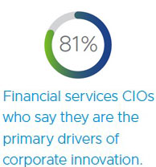

Top 8 Banking Challenges faced by Bank CIOs in 2020.
Updated On : july 2020The year 2020 has started with dramatic changes in the banking sector. From the merger of banks to the liquidity crisis, and low credit demand to the massive defaults. Bankers are going through many changes and challenges during this Covid19 Pandemic.
CIOs in the driver's seat - Banking CIOs need to undertake front-to-back digital transformations to stay ahead of the curve, says a recent BCG report.
As technology evolution accelerates, it brings key challenges to the IT department. Today's bank CIOs and IT leaders must identify and prepare for these challenges if they hope to remain competitive in the coming years. What challenges can we expect in 2020?
Amid proliferating digital innovation in the banking sector, CIOs appear poised to play a more prominent role, from ideation and piloting, through deployment.
Here we examine the top 8 challenges faced by bank CIOs and how these Banking CIOs can survive the FinTech disruption?
- Managing Data Security and Consumer Privacy: Security, Risk Management and Consumer Privacy are the top on the lists of concerns that CIOs ponder upon, due to the increasing rate at which the threats are evolving.
- Compliance with Government and Industry regulations: Banking sector has to comply with a host of government and industry regulations. Often the CIOs have to keep abreast of new regulations while adhering to these regulations. "The Bank Secrecy Act (BSA), GDPR, and anti-money laundering compliance, in particular has taken a lot of attention from CIOs for years.
- Data Silos: According to a survey of Financial Industry executives, which included many CIOs and CTOs, it has been observed that cooperation between departments is the major challenge. Hence, the leaders sense the need to provide their customers with a seamless and omnichannel user experience. "However, 56% of respondents said access to IT resources is an obstacle, while 46% said the fact that different business units own different parts of the customer lifecycle was the primary barrier to addressing the lifecycle in full."
- Fostering innovation with emerging technology: With the rise of business disrupters in the financial services, CIOs have to plan what to offer in the near future, to keep in pace or outpace the competition. The need to deploy new and emerging technologies and systems that will better serve and streamline their customers' experiences is now of supreme concern for maintaining long-term business viability.
- Finding and retaining talent with modern skills: According to a research by Forrester, only 16% of businesses have the right skills out of 75% of businesses who have a digital strategy. Another survey finds that almost 93% CIOs are facing a big challenge to address the skills gap, while staying updated with the changing technology trends. Also, due to the disruption caused by emerging technologies (e.g., intelligent process automation, Robotics, Artificial Intelligence, Cloud, new-age business process management suites), the CIOs must take a lead in vendor management. This will help in building inhouse skills and capabilities, create an interactive vendor ecosystem and drive innovation and growth.
- Connecting Decentralized Software: Cloud computing was the next big thing when it had emerged. But the problem was with its slow adoption due to security concerns. It did not grow as fast as predicted by the industry experts. But the scenario has completely changed in the present. Currently, there is growing requirement for Cloud and SaaS offerings. Rather than procuring a single solution for all, businesses are opting for SaaS offerings that serve specific functions. As a result, the CIO's focus is turning towards integration of different software applications across the business into single cohesive system.
- Merging Old and New: According to a Gartner report, 82% of CEOs have a digital transformation or initiative, and 77% plan to increase investment in digital capabilities. However, merging legacy technologies with modern technology without sacrificing function or security will be a rising challenge for CIOs in their digital transformation journeys. Banks are also facing a challenge of new players like FinTech. Banks can compete with them with better digital offerings or collaborate with them.
- Managing the resistance from internal culture: An organisational change is needed when a bank transitions into purely digital organisation to sustain the impact of the change. The success of a digital transformation journey depends on the organisations culture. The whole organization should be informed and the CIOs should assess the internal readiness for such transformations. These transformations require greater innovation, collaboration and technological convergence. 
These are some of the top challenges a Banking and Finance CIO faces. To keep up with these developments, banking CIOs need to undertake front-to-back digital transformations. Only those that skilfully manage this challenging evolution will survive and prosper in the future.
Leave Comments :
© Nelito Systems Ltd. Terms & Privacy
Comments :